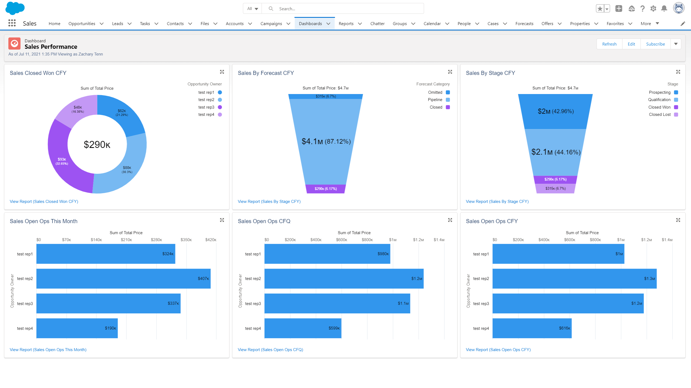

Sales Performance Reported in Salesforce
Sales managers are responsible for performance on a day-to-day basis making micro adjustments and resolving disruptions to the pipeline. Visibility is critical to preempting these issues, assuring quota attainment, and reliably forecasting future opportunities.
Because sales managers and their reps live in Salesforce it is key to maintain the CRM as the single source of truth. To that end I have built the dashboard and constituent reports pictured above inside my personal Salesforce instance to demo the platform's functionality. I have thematically organized the reports by opportunity status, namely closed won, open opportunities by forecast and stage, as well as all opportunities (including lost) based on close date relative to fiscal period.
Unfortunately, Salesforce does not allow public access to private instances so I cannot share a link to the dashboard.